6 Construyendo el Modelo
6.1 Instalando y Abriendo NetLogo
El programa NetLogo (Versión 6.1) lo puede bajar del siguiente enlace:
Usaremos la versión 6.1 Una vez lo instale abra el programa en su computadora debe aparecer lo siguiente:
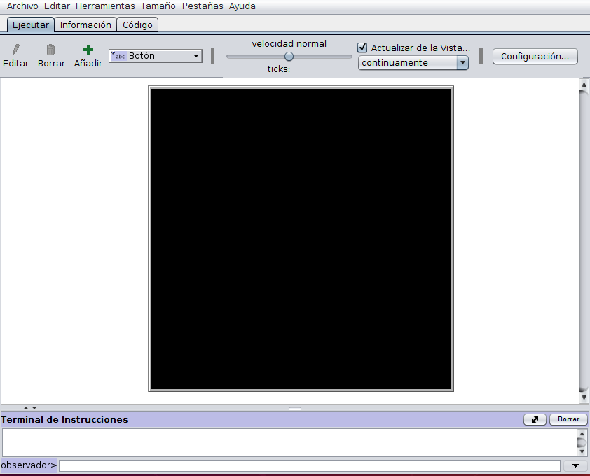
- Crear, a través de Archivo / Nuevo en el menú de NetLogo, un nuevo archivo de NetLogo. Guárdelo a través de Archivo /Guardar como, en un directorio de su elección y con el nombre de archivo BusHongos.nlogo.
Haga clic en el botón Configuración, el botón Configuración abre el cuadro de diálogo de configuración del modelo, donde puede verificar la geometría del mundo.Usaremos la geometría predeterminada con:
- el origen (parcela 0,0) en el centro del mundo.
la coordenada máxima en x (max-pxcor) y coordenada máxima en y(max-pycor) en 16.
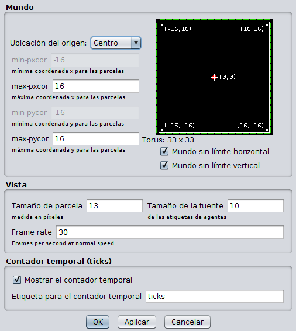
Esto forma un cuadrado de 33 × 33 parcelas Haga clic en Aceptar para cerrar el cuadro de diálogo Configuración.
Para nuestro modelo de búsqueda de hongos , queremos crear un mundo con parcelas negras, con algunos grupos de parcelas rojas (que representan hongos) distribuidas al azar, también crearemos dos agentes (turtles) que serán nuestros buscadores y luego haremos que los buscadores encuentren las parcelas rojas. Por lo tanto, necesitamos :
- setup: inicializar el Mundo y los buscadores , y luego
- go: modelar las acciones que realizarán los buscadores para encontrar los hongos.
6.1.1 Procedimiento setup
Seguiremos la convención en NetLogo de usar el nombre setup para el procedimiento que inicializa el mundo y los agentes (buscadores), y el nombre go para el procedimiento que realiza las acciones querealiza el modelo. A estas alturas ya debía saber que un procedimiento comienza y termine con las palabras clave to y end respectivamente.( al leer la guía de programación de NetLogo) Antes de construir los procedimientos de inicio (setup) y de acciones (go) vamos a crear dos botones en la interfaz de NetLogo (pestaña Interfaz) que se utilizarán para activar estos procedimientos, active la pestaña interfaz de NetLogo.
En la pestaña Interfaz, hay un menú desplegable, generalmente etiquetado como “Botón”, que le permite seleccionar uno de los elementos de interfaz proporcionados por NetLogo (botón, deslizador, interruptor, etc.).
- Haga clic en este selector, que abre una lista de estos elementos, luego haga clic en Botón.
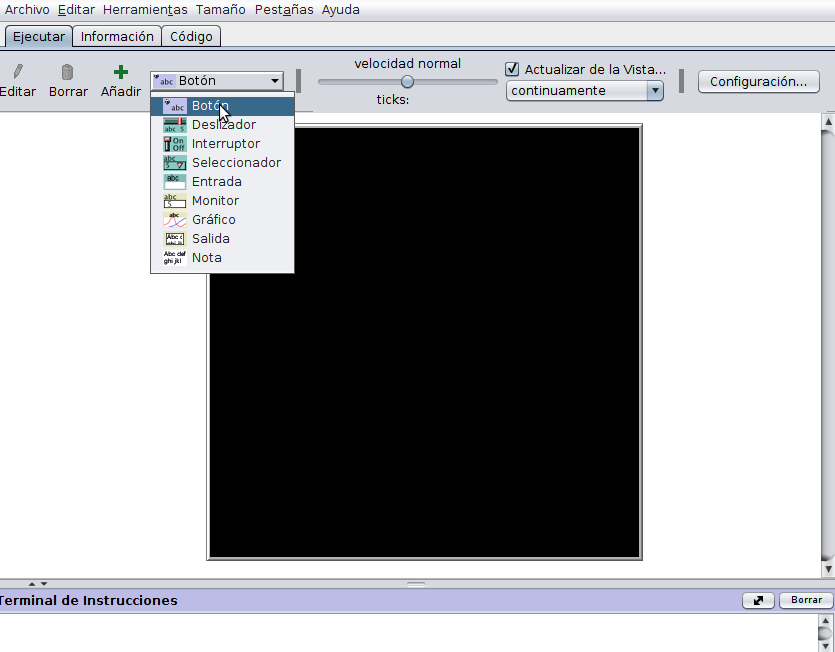
Coloque el cursor del mouse en la parte en blanco de la interfaz, a la izquierda de la ventana negra del mundo y haga clic Esto pone un nuevo botón en la interfaz y abre una ventana que le permite colocar las características de este nuevo botón:
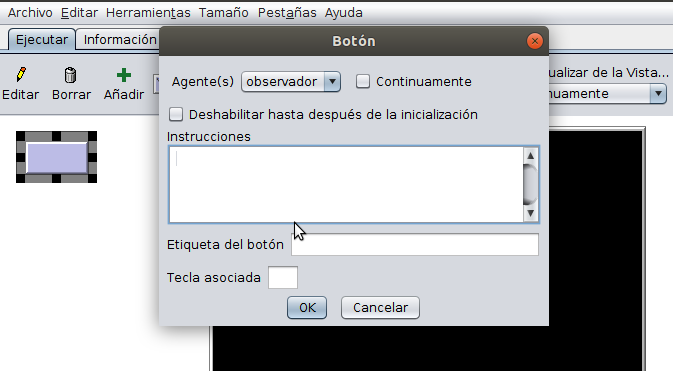
En el campo Instrucciones de la ventana que apareció, escriba “setup” y haga clic en Aceptar, hemos creado un botón que ejecutará un procedimiento llamado setup, la etiqueta del botón está en rojo, lo que indica que:
no hay un comando o procedimiento correspondiente llamado de esa manera, esto lo arreglaremos en un minuto.A continuación, escribamos el procedimiento de setup
► Haga clic en la pestaña Código, donde encontrará un espacio en blanco para ingresar su código.Al inicio escriba:
to setup
end
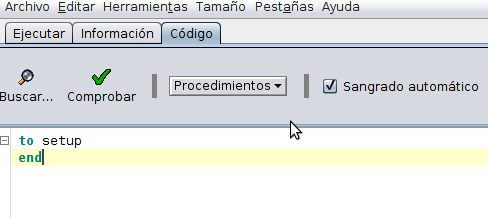
► Haga clic en el botón Comprobar (el que tiene un chulito).Este botón activa el verificador de sintaxis de NetLogo, que busca errores en su código como :
- ¿faltan paréntesis?
- ¿Los comandos tienen el número correcto de entradas?
- ¿el procedimiento no existe?, etc.
Es importante usar el verificador de sintaxis con frecuencia, después de cada declaración que escriba, de esta manera se encuentran errores de inmediato y se sabe exactamente donde están. Sin embargo, este verificador no encuentra todos los errores; más adelante veremos otras formas de encontrar errores. Ahora no debería haber ningún mensaje de error. Si vuelve a la pestaña Interfaz, la etiqueta del botón setup debe estar en negro, lo que indica que ahora el procedimiento ya está definido y se puede ejecutar (a pesar de que este procedimiento todavía está vacío y no hace nada.)
Regrese a la pestaña Código y elimine la palabra end Haga clic en el botón Verificar nuevamente. Se obtendrá un mensaje de error que dice End expected o sea que se esperaba un end.
Deshaga la eliminación de end usando CTRL-Z.
Regrese a la pestaña Interfaz y cree un segundo botón, colque en la ventana de instrucciones la palabra “go” y luego haga clic en la casilla que dice “Continuamente”:
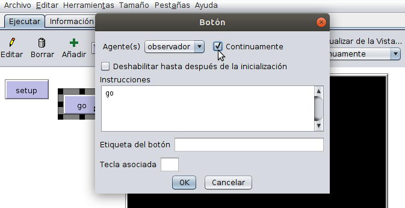
Haga clic en Aceptar.Este segundo botón, go, ahora tiene un par de flechas circulares que indican que es un botón que al oprimirlo se ejecutará continuamente (“Para siempre”) significa que cuando se hace clic en el botón, se ejecutará su procedimiento (go) una y otra vez hasta que se vuelva a hacer clic en el botón.
De la misma manera que creamos el procedimiento de setup enla pestaña de código (con dos líneas que dicen setup y end), escriba el procedimiento go de la misma manera.
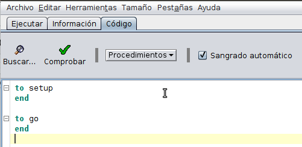
6.2 Definición de setup
6.2.1 Construyendo las parcelas.
- Ahora, le diremos al procedimiento setup que cambie el color de las parcelas.
- Cambie el procedimiento de configuración a lo siguiente:
to setup
ask patches
[
set pcolor red
]
end
ask es el comando más importante y poderoso de NetLogo. Hace que los agentes seleccionados (aquí, todos las parcelas) efectuen las acciones especificadas dentro de los paréntesis cuadrados. Estos paréntesis cuadrados siempre definen un bloque de acciones que se ejecutan juntas. Las declaraciones que acabamos de escribir “preguntan” (ask) a todos las parcelas que cambien su color a rojo ( pcolor = red), Las parcelas por defecto tienen su color (pcolor) configurado en negro (por eso el mundo se ve así al comienzo como un gran cuadrado negro),en nuestro nuevo procedimiento de setup usaremos el comando “set” para cambiar el color a rojo, este comando es un operador de asignación: asigna un valor (rojo) a una variable, en este caso pcolor. (En muchos lenguajes de programación, esta declaración se escribiría pcolor=rojo, que no funciona en NetLogo!)
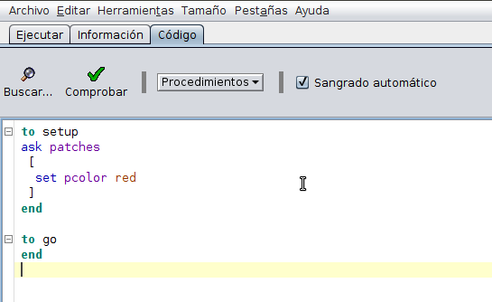
- Pruebe el nuevo procedimiento de setup yendo a la pestaña Interfaz y haciendo clic en el botón, Todas los parcelas deben ponerse rojas.Sin embargo, queremos que solo unos pocos grupos de parcelas se vuelvan rojas (los hongos). Hagamos que NetLogo seleccione cuatro parcelas aleatorias, y luego pida a esas cuatro parcelas que vuelvan rojas a veinte parcelas cercanas. la modificación del procedimiento setup es la siguiente:
to setup
ask n-of 4 patches [
ask n-of 20 patches in-radius 5 [
set pcolor red
]
]
end
Los comandos n-of y in-radius son nuevos.
- Busque n-of y in-radius en el Diccionario NetLogo. Puede encontrarlos en el Diccionario de Netlogo, haciendo clic en la categoría Agentset (lugar donde se encuentran todos los comandos que tienen que ver con grupos de agentes).
(Nota: un truco importante para ir directamente a la definición de cualquier comando es haciendo clic en la palabra y presionar F1.)
El Diccionario de NetLogo explica que n-of selecciona un subconjunto aleatorio de un grupo de agentes, in-radius selecciona todos los agentes (en este caso parcelas) dentro de un radio especificado ( cinco ). Por lo tanto, nuestro nuevo código de setup identifica cuatro parcelas aleatorias y les pide a cada una de ellas que identifique aleatoriamente veinte parcelas dentro de un radio de cinco, y que les cambie el color a rojo.
- Vaya a la pestaña Interfaz y presione el botón de setup. Si todos las parcelas siguen en rojo ¡no pasa nada! ¿Hay algún error? En realidad no, porque solo le dijo al programa que pusiera algunas parcelas en rojo, pero todos las parcelas ya estaban en rojo, así que no se ve ningún cambio. Para evitar este tipo de problema, asegurémonos de que el mundo siempre sea restablecido a su estado inicial ( o sea las parcelas en negro) Esto se hace con el comando clear-all que se debe agregar como primera línea al procedimiento setup:
to setup
clear-all
ask n-of 4 patches [
ask n-of 20 patches in-radius 5 [
set pcolor red
]
]
end
Olvidar poner clear-all al comienzo del procedimiento de setup es un error muy común. Casi siempre necesitamos comenzar el proceso de setup borrando todo lo que quedaba desde la última vez que ejecutamos el modelo.Si se hace clic en el botón de setup ahora, verá un mundo en negro con algo de rojo. Si se hace clic en el botón de setup varias veces, verá que cuatro grupos aleatorios de manchas rojas se crean, de hecho a veces parece que se crean menos grupos porque los grupos se superponen. Otras veces parece que parte de un grupo se crea en el borde del mundo; para entender por qué, vaya a la sección de la Guía de interfaz de NetLogo en las Vistas y lea sobre “World Wrapping”, y vea la sección de la Guía de programación llamada “Topología”. Comprender la noción de “World Wrapping” de NetLogo que es muy importante!
6.2.2 Variables globales
Desde el menú principal de NetLogo, presione Archivo / Guardar. ¡Guarde su trabajo a menudo! NetLogo no lo hará!! Ahora hagamos que el número de grupos de parcelas rojas sea un parámetro del modelo, para hacer esto necesitamos :
- crear una variable global numérica llamada num-clusters (número de grupos de hongos)
darle un valor de 4 (usando el comando set)
► En la pestaña de Código, vaya a la parte superior de todo su código e inserte arriba del procedimiento setup lo siguiente:
globals [
num-clusters
]
- Coloque:
set num-clusters 4luego de la instrucción clear-all en el setup.
- reemplace el 4 en la instrucción ask n-of 4 patches por num-clusters. Ahora, si queremos cambiar el número de grupos, sabemos exactamente dónde encontrar y cambiar el valor del parámetro sin modificar nada más en el modelo. (Más tarde, usaremos deslizadores para cambiar los parámetros desde la interfaz
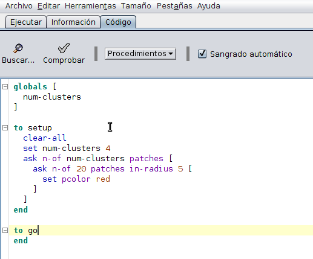
6.3 Creando los agentes (buscadores)
Ahora que hemos construido el “mundo” del modelo, necesitamos crear los agentes, en nuestro caso dos buscadores. Esto se hace con el comando create-turtles, La declaración create-turtles 2 [] crea dos tortugas (agentes) y les hace ejecutar el código dentro de los corchetes Agregue el siguiente código al final del procedimiento de setup Haga clic en Comprobar para buscar errores, luego pruébelo usando el botón de setup en la interfaz:
create-turtles 2 [
set size 2
set color yellow
]
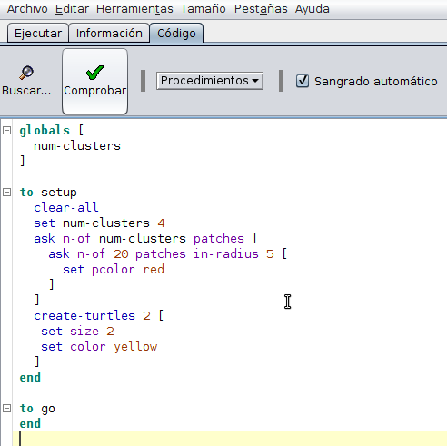
El tamaño y el color son variables predefinidas de los agentes (turtles) por esta razón podemos definir sus valores sin definirlas. Si se hace clic en el botón setup varias veces, verá que dos buscadores se colocan en el centro del mundo (por defecto)y su dirección varía al azar:
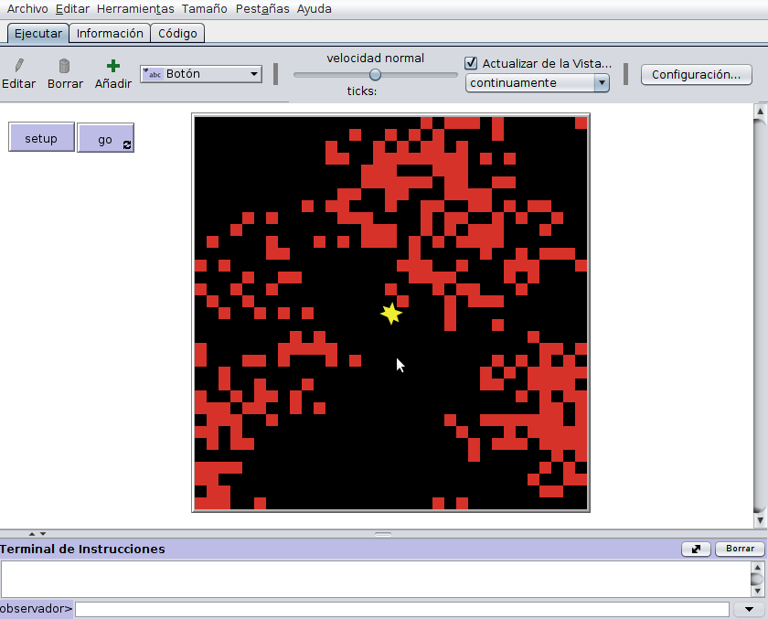
6.4 Comportamiento de los agentes (Procedimiento go)
Ahora vamos a construir el procedimiento go. El procedimiento go define el “comportamiento” del modelo, o sea los procesos que se realizarán una y otra vez, y su orden. Para mantener el procedimiento go simple y fácil de entender, lo cual es muy importante porque es el corazón del programa: casi nunca programamos procesos o acciones reales dentro del go. En cambio, definimos procedimientos auxiliares y se programa cada acción. En nuestro modelo de búsqueda de hongos, solo tenemos una acción, la búsqueda de los agentes, por lo tanto el procedimiento go necesita incluir solo un prodcedimiento, que le dice a todas las tortugas (nuestros dos buscadores) que ejecuten un procedimiento de búsqueda:
ask turtles [search]Para que esto funcione, por supuesto, necesitamos escribir el procedimiento llamado “search” para los buscadores.
- Agregue la linea, ask turtles [search] al procedimiento go. Luego cree un procedimiento vacio para que pueda verificar el código :
to search
end
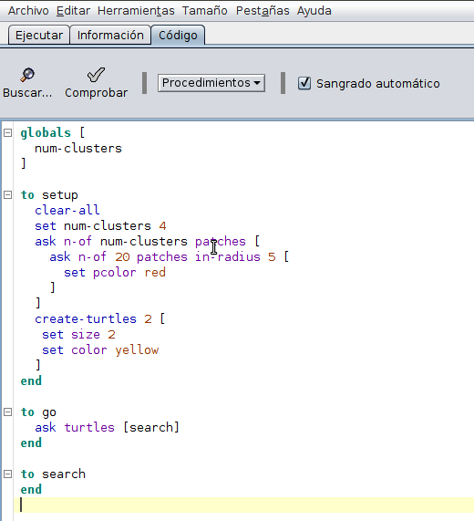
Ahora programemos cómo buscan los agentes (buscadores) Cada vez que se ejecuta la búsqueda, queremos que los cazadores giren, un poco si no han encontrado nada recientemente (por ejemplo, en las últimos veinte parcelas recorridas), o bruscamente para seguir buscando en la misma área si encontraron un hongo recientemente. Luego de girar los buscadores deben avanzar hacia una parcela vecina. * Agregue el siguiente código al procedimiento de búsqueda, cualquier parte que no entienda búsquela en el diccionario de NetLogo:
ifelse time-since-last-found <= 20
[right (random 181) - 90]
[right (random 21) - 10]
forward 1Puede deducir buscando en el Diccionario de NetLogo que la declaración right (random 181 - 90) hace que los buscadores (turtles) giren un ángulo aleatorio entre −90 y +90 grados. Observe cómo usamos la instrución ifelse para modelar decisiones. Si la condición booleana que sigue a ifelse es verdadera, entonces el código en el primer conjunto de corchetes se ejecuta; si es falso, se ejecuta el código en el segundo conjunto de corchetes.Una condición booleana es una declaración que es verdadera o falsa. Aquí, la condición es:
time-since-last-found <= 20
consiste en una comparación: es cierto si el valor de time-since-last-found es menor o igual a 20. Si presiona el botón Comprobar saldrá un error:
“Nothing named time-since-last-found has been defined”
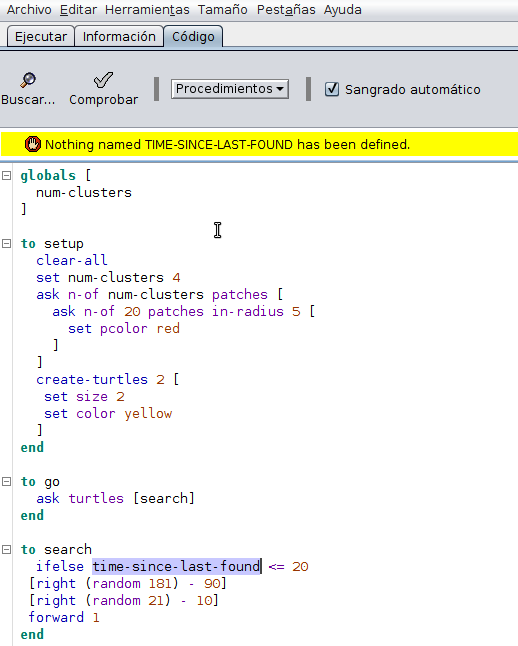
6.4.1 Variables locales de agentes
No hemos definido esta variable, queremos que sea una variable que registre cuánto tiempo ha pasado desde que cada buscador encontró el último hongo Eso significa tres cosas.
- Primero, Cada cazador debe tener su propio valor único para esta variable, por lo que debe ser una variable de tipo turtle (agente), justo después de la declaración global al comienzo de su programa, agregue:
turtles-own [
time-since-last-found
]En segundo lugar, necesitamos establecer el valor inicial de esta variable cuando creamos los buscadores Estableceremos,asumiendo que los cazadores aún no han encontrado un hongo,un valor mayor que 20.
► En el procedimiento de setup, cambie la instrucción create-turtles a esto:
create-turtles 2 [
set size 2
set color yellow
set time-since-last-found 999
]Finalmente, los cazadores deben actualizar time-since-last-found cada vez que se mueven. Si encuentran un hongo, necesitan restablecer time-since-last-found a cero (¡y recoger el hongo!); de lo contrario, necesitan agregar uno a time-since-last-found.
► Agregue estas declaraciones al final del procedimiento search:
ifelse pcolor = red [
set time-since-last-found 0
set pcolor yellow
][
set time-since-last-found time-since-last-found + 1
]
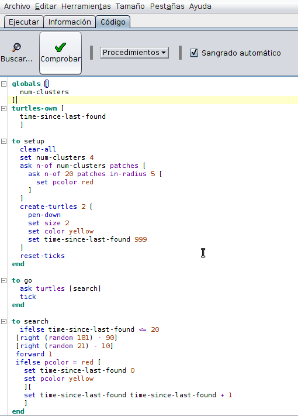
Tenga en cuenta que estas declaraciones funcionan porque NetLogo permite a los agentes leer y cambiar variables de la parcela en la que están (en este caso set pcolor yellow).También tenga en cuenta que para agregar un uno a time-since-last-found tuvimos que usar set para asignar su nuevo valor a su antiguo valor más uno. (Tenga en cuenta que en NetLogo debe usar espacios alrededor de operadores aritméticos como “+”; de lo contrario, NetLogo cree que son parte del nombre de la variable).
Asegúrese de comprender que las coordenadas de la parcela son variables discretas: solo tienen valores enteros, en unidades de ancho de parcela. En contraste, las coordenadas de tortuga son variables continuas:pueden tomar cualquier valor dentro de una parcela, por ejemplo, 13.11 unidades. Por eso es importante distinguir entre instrucciones que se refieren a coordenadas de tortuga y aquellas que se refieren a parcelas. Por ejemplo la instrucción move-to mueve un agente (turtle) al centro de una parcela, pero forward puede colocar un agente en cualquier lugar de esta.Si ahora prueba el programa haciendo clic en el botón go, es posible que no pueda ver mucho porque los agentes buscadores se mueven demasiado rápido Si es así, ajuste el controlador de velocidad de ejecución en la interfaz.
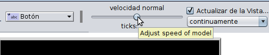
(Haga clic en go por segunda vez para detener la ejecución).Voilà! ¡Aquí tenemos nuestro primer programa completo de NetLogo! (¡Asegúrese de guardarlo!) Al correr el modelo , oprimiendo setup y luego go debe aparecer lo siguiente:
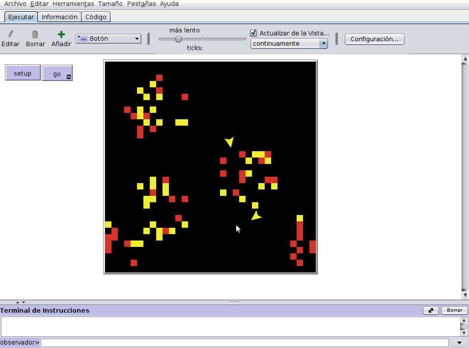
Sorprendentemente, a pesar de su simplicidad, este modelo contiene los elementos más importantes de cualquier modelo basado en agentes. Pero antes de mirar de manera más detallada nuestro modelo detengámonos un momento para echar un vistazo a tres herramientas muy importantes de NetLogo
6.5 Tres Herramientas Importantes
Las herramientas son:
- Monitores de agentes
- el Centro de Comandos y
- los ticks (Manejo del tiempo)
6.5.1 Monitor de Agentes
Los monitores de agentes son herramientas para ver y cambiar las variables de un agente (tortuga, parcela o enlace). * Mueva el cursor sobre uno de los buscadores y haga clic derecho. Aparece un panel en el que aprece al final “turtle 0”; mueva el cursor a turtle 0 y seleccione “inspect turtle 0”.
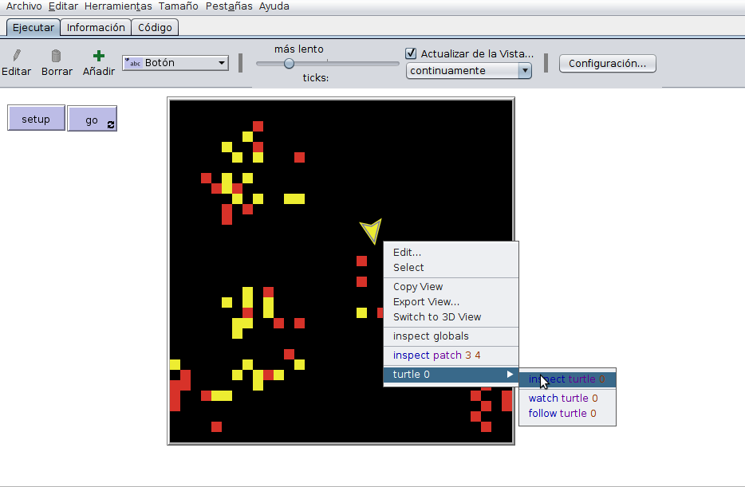
Se abre un Monitor de agente que incluye dos paneles: una vista ampliada de donde se encuentra el agente (turtle 0) y su entorno y una lista de todas las variables del agente:
su posición, color, dirección, etc.
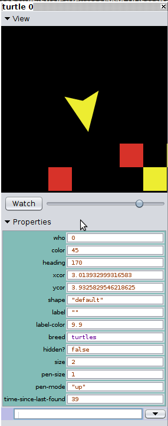
Observe que aparece la variable que definimos a los agentes buscadores (time-since-last-found) (Cada panel se puede cerrar y se vuelve a abrir haciendo clic en el pequeño triángulo negro en su esquina superior izquierda). Sin cerrar esta ventana, puede reiniciar el modelo haciendo clic en go y observa cómo cambian las variables del agente, también puede cambiar sus valores siempre que lo desee, simplemente ingresando un nuevo valor en el monitor.
- Detenga el programa y cambie el tamaño de la tortuga a 5, y su tiempo desde la última vez que se encontró a −99. (Sus cambios se activan cuando presiona la tecla Enter o mueve el cursor fuera del cuadro de diálogo donde se ingresan los valores). Hay más cosas que puede hacer con los monitores de agentes, incluido dar comandos directamente al agente seleccionado escribiendo los mismos tipos de declaraciones de NetLogo que usaría en su código. Lea la sección Monitores de agentes de la Guía de interfaz del Manual del usuario.
6.5.2 Centro de Comandos
El Centro de Comandos aparece en la parte inferior de la pestaña Interfaz. Aquí se pueden colocar comandos para el observador o para todos los parcelas, tortugas(agentes) o enlaces. Lea la sección del Centro de comandos del Manual del usuario y pruebe algunos comandos, como decirle a las parcelas que cambien su color a azul, el Centro de Comandos no parece útil al principio, pero a medida que se convierta en un mejor modelador basado en agentes con NetLogo, encontrará estas herramientas extremadamente útiles. Como ejemplo divertido, use el Centro de comando para hacer lo siguiente:
- Después de configurar el modelo y dejar que se ejecute por un segundo o dos,parelo. Haga clic en el texto “observador>” en el Centro de Comandos. De la lista que aparece seleccione “tortugas>” para que ahora pueda emitir un comando a todas las tortugas. En la ventana adyacente, ingrese “hatch 1 [right 160]”, que le dice a cada buscador que cree un segundo buscador, que luego gira 160 grados:
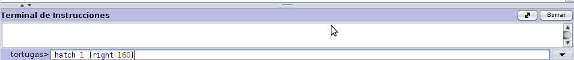
► Ejecute el programa y vea cómo los cuatro buscadores buscan parcelas rojas. Usted puede repetir el comando para crear aún más buscadores: simplemente coloque el cursor en la línea de comando y presione la flecha hacia arriba para recuperar el comando anterior, luego teclee enter
► Después de crear más buscadores , haga que el Centro de Comando le diga cuántos buscadores hay Seleccione observador> para enviar comandos e ingrese “show count turtles”
6.5.3 Manejo del tiempo
Hasta ahora, nuestro modelo no maneja el tiempo explícitamente: no hacemos un seguimiento de cuántas veces se ejecuta el procedimiento, por lo que no podemos determinar cuánto tiempo ha transcurrido si por ejemplo, que cada vez que los buscadores de hongos se mueven representa un minuto.Para modelar el tiempo, hay que usar la instrucción tick cada vez que se ejecuta el procedimiento go. (Lea en la guía de programación la sección contador de ticks (tick counter)) y se dará cuenta que:
► Al final del procedimiento setup, se debe insertar una línea con la instrucción reset-ticks.Al comienzo del procedimiento go, inserte una línea con la instrucción tick
Si ahora hace clic en setup y luego en go va, puede observar el contador de ticks en la parte superior de la Vista; este muestra cuántas veces se ha ejecutado el procedimiento go. Finalmente, ¿no sería útil ver el camino de cada buscador?:
- En el procedimiento setup, agregue la instrucción pen-down, luego de la instrucción create-turtles.
UUUfff Listo!!!!! El modelo completo de buscador de hongos es el siguente:
globals [
num-clusters
]
turtles-own [
time-since-last-found
]
to setup
clear-all
set num-clusters 4
ask n-of num-clusters patches [
ask n-of 20 patches in-radius 5 [
set pcolor red
]
]
create-turtles 2 [
pen-down
set size 2
set color yellow
set time-since-last-found 999
]
reset-ticks
end
to go
ask turtles [search]
tick
end
to search
ifelse time-since-last-found <= 20
[right (random 181) - 90]
[right (random 21) - 10]
forward 1
ifelse pcolor = red [
set time-since-last-found 0
set pcolor yellow
][
set time-since-last-found time-since-last-found + 1
]
end
Puede ensayarlo en el siguiente applet: